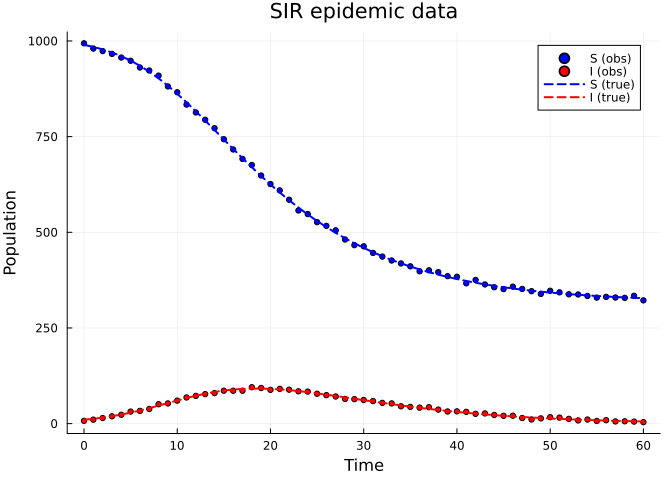
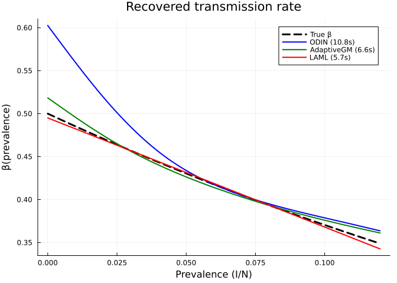
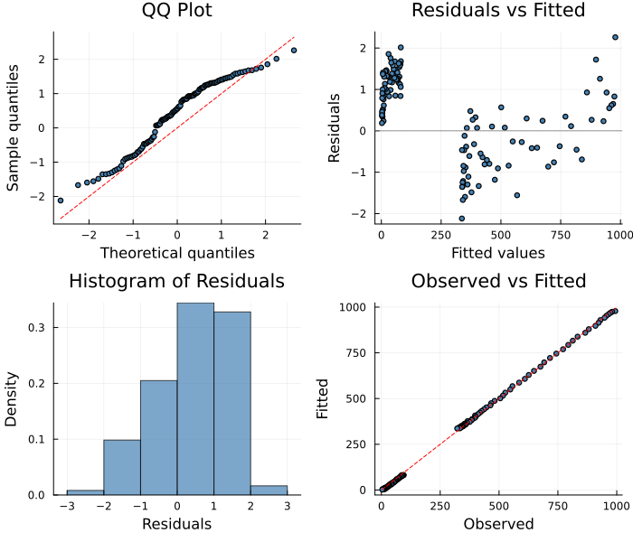

ODIN: ODE-Informed Gaussian Process Regression
Overview
The ODINSolver implements ODE-Informed regression (Wenk & Abbati, 2020). GP hyperparameters are first estimated per observed state by marginal likelihood; then the states and the unknown-function parameters are optimised jointly under a risk that combines the data fit, a GP prior on the trajectory, and an ODE-gradient mismatch weighted by the GP’s conditional derivative covariance. Unlike simple gradient matching (which smooths data once, independently of the ODE), the trajectory can move away from the GP posterior mean when the ODE demands it, and unobserved states are inferred through the ODE terms.
When to use ODINSolver:
- You want a principled GP-based approach with stronger ODE coupling than gradient matching
- The unknown function is smooth and well-suited to kernel-based estimation
- You want to avoid ODE integration entirely while still using ODE structure
Comparison with related solvers:
| Solver | GP smoothing | ODE coupling | Integration |
|---|---|---|---|
| GradientMatching | Cubic spline | One-way (smooth → match) | No |
| AdaptiveGradientMatching | GP + eigendecomp | Product-of-experts | No |
| ODINSolver | GP prior on states | Joint (states + θ optimised together) | No |
| MagiSolver | GP + manifold constraint | Full Bayesian | No |
Setup
using PartiallySpecifiedModels
using PartiallySpecifiedModels: solve
using OrdinaryDiffEq
using Plots
using Random
Random.seed!(42)TaskLocalRNG()Example: SIR Model with Behavioural Response
We use an SIR model where the total population $N$ is passed as a known constant. This is important for gradient-matching methods (ODIN, AdaptiveGM) which smooth observed states independently — if $N$ were computed as $S + I + R$ with $R$ unobserved, the prevalence estimate would be biased.
function sir!(du, u, p, t)
S, I, R = u
prev = I / p.N
β_val = p.β(prev)
foi = max(β_val, 0.001) * S * I / p.N
du[1] = -foi
du[2] = foi - p.γ * I
du[3] = p.γ * I
end
β_true(prev) = 0.5 * exp(-3.0 * prev)
function sir_true!(du, u, p, t)
S, I, R = u
prev = I / 1000.0
β = 0.5 * exp(-3.0 * prev)
du[1] = -β * S * I / 1000.0
du[2] = β * S * I / 1000.0 - 0.25 * I
du[3] = 0.25 * I
end
u0 = [990.0, 10.0, 0.0]
sol_sir = OrdinaryDiffEq.solve(ODEProblem(sir_true!, u0, (0.0, 60.0)), Tsit5(); saveat=1.0)
t_data = collect(sol_sir.t)
rng = Random.Xoshiro(42)
data_si = max.(hcat(
[sol_sir.u[i][1] + 5.0*randn(rng) for i in 1:length(t_data)],
[sol_sir.u[i][2] + 2.0*randn(rng) for i in 1:length(t_data)]), 0.01)
scatter(t_data, data_si[:, 1], label="S (obs)", ms=3, color=:blue)
scatter!(t_data, data_si[:, 2], label="I (obs)", ms=3, color=:red)
plot!(sol_sir.t, [sol_sir.u[i][1] for i in 1:length(sol_sir.t)],
label="S (true)", lw=2, ls=:dash, color=:blue)
plot!(sol_sir.t, [sol_sir.u[i][2] for i in 1:length(sol_sir.t)],
label="I (true)", lw=2, ls=:dash, color=:red,
xlabel="Time", ylabel="Population", title="SIR epidemic data")
Fit with ODIN
approx_β = BSplineApproximator(:β, (0.0, 0.15), 8; initial=0.4)
prob = PSMProblem(sir!, u0, (0.0, 60.0), [approx_β];
data_times=t_data, data_values=data_si,
obs_to_state=[1, 2], known_params=(γ=0.25, N=1000.0), solver=Tsit5())
t_odin = @elapsed sol_odin = solve(prob,
ODINSolver(maxiters=100, verbose=true)) # GP hyperparameters estimated per state
println("\nTime: $(round(t_odin, digits=1))s")ODINSolver: 2 observed states, 61 time points
GP hyperparams: σ²=52200.0 ℓ=18.0 σ_n²=52.2
GP hyperparams: σ²=867.0 ℓ=12.0 σ_n²=8.67
joint optimisation over 183 state values + 8 unknown-function parameters
step 1: risk=78398.0
step 2: risk=77975.0
step 3: risk=77802.0
step 100: risk=74477.0
step 200: risk=71679.0
step 300: risk=69099.0
step 400: risk=66736.0
step 500: risk=64591.0
step 600: risk=62663.0
step 700: risk=60950.0
step 800: risk=59445.0
step 900: risk=58141.0
step 1000: risk=57029.0
step 1100: risk=56097.0
step 1200: risk=55334.0
step 1300: risk=54726.0
step 1400: risk=54260.0
step 1500: risk=53918.0
step 1600: risk=53684.0
step 1700: risk=53539.0
step 1800: risk=53464.0
step 1900: risk=53435.0
step 2000: risk=53431.0
Time: 10.8sCompare with Adaptive Gradient Matching and LAML
t_agm = @elapsed sol_agm = solve(prob, AdaptiveGradientMatching(maxiters=200, verbose=false))
t_laml = @elapsed sol_laml = solve(prob,
LAML(maxiters=100, verbose=false, initial_lambda=10.0, warmup=5))
prev_grid = range(0.0, 0.12, length=100)
β_true_vals = [β_true(p) for p in prev_grid]
plot(prev_grid, β_true_vals, label="True β", lw=3, color=:black, ls=:dash,
xlabel="Prevalence (I/N)", ylabel="β(prevalence)",
title="Recovered transmission rate")
plot!(prev_grid, [sol_odin.unknown_functions[:β](p) for p in prev_grid],
label="ODIN ($(round(t_odin, digits=1))s)", lw=2, color=:blue)
plot!(prev_grid, [sol_agm.unknown_functions[:β](p) for p in prev_grid],
label="AdaptiveGM ($(round(t_agm, digits=1))s)", lw=2, color=:green)
plot!(prev_grid, [sol_laml.unknown_functions[:β](p) for p in prev_grid],
label="LAML ($(round(t_laml, digits=1))s)", lw=2, color=:red)
Diagnostic Plots
using PartiallySpecifiedModels: appraise
diag = appraise(sol_odin)
p_qq = scatter(diag.qq_theoretical, diag.qq_sample,
xlabel="Theoretical quantiles", ylabel="Sample quantiles",
title="QQ Plot", ms=3, legend=false, color=:steelblue)
mn, mx = extrema(vcat(diag.qq_theoretical, diag.qq_sample))
plot!(p_qq, [mn, mx], [mn, mx], color=:red, ls=:dash)
p_rf = scatter(diag.fitted, diag.residuals,
xlabel="Fitted values", ylabel="Residuals",
title="Residuals vs Fitted", ms=3, legend=false, color=:steelblue)
hline!(p_rf, [0], color=:gray, ls=:dot)
p_hist = histogram(diag.residuals, normalize=:pdf,
xlabel="Residuals", ylabel="Density",
title="Histogram of Residuals", legend=false, color=:steelblue, alpha=0.7)
p_of = scatter(diag.observed, diag.fitted,
xlabel="Observed", ylabel="Fitted",
title="Observed vs Fitted", ms=3, legend=false, color=:steelblue)
mn2, mx2 = extrema(vcat(diag.observed, diag.fitted))
plot!(p_of, [mn2, mx2], [mn2, mx2], color=:red, ls=:dash)
plot(p_qq, p_rf, p_hist, p_of, layout=(2, 2), size=(700, 600))
How It Works
ODIN proceeds in two stages:
- GP pre-training: per observed state, the RBF hyperparameters $(\sigma^2, \ell, \sigma_n^2)$ are estimated by maximising the GP marginal likelihood. These fix the prior precision $K^{-1}$, the derivative map $D = {}'K K^{-1}$, and the conditional derivative covariance $A = {}''K - {}'K K^{-1} {}'K^\top + \gamma I$.
- Joint optimisation: the states $X$ and the unknown-function parameters $\theta$ are optimised together against the risk $R(X, \theta) = \sum_k \left[ \tfrac{1}{\sigma_{n,k}^2}\|y_k - x_k\|^2 + \tilde{x}_k^\top K_k^{-1} \tilde{x}_k + (f_k(X,\theta) - D_k \tilde{x}_k)^\top A_k^{-1} (f_k(X,\theta) - D_k \tilde{x}_k) \right].$
The key difference from simple gradient matching is the Mahalanobis weighting $A^{-1}$ — the ODE mismatch is trusted only in directions where the GP actually determines the derivative — and that the states are free to move away from the GP posterior mean when the ODE demands it. Unobserved states enter as free variables identified through the ODE terms alone, so partially observed systems are supported.
References
- Wenk, P., Abbati, G. et al. (2020). ODIN: ODE-Informed Regression for Parameter and State Inference in Time-Continuous Dynamical Systems. AAAI.
- Wenk, P. et al. (2019). Fast Gaussian Process Based Gradient Matching for Parameter Identification in Systems of Nonlinear ODEs. AISTATS.